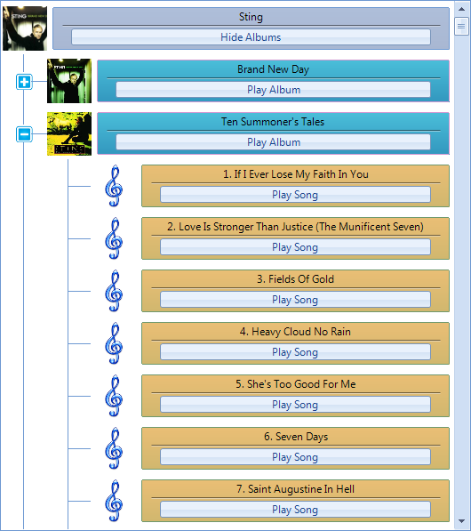

Custom Nodes
With RadTreeView you can create custom nodes and display them instead of the default ones. This can be done by creating a custom TreeNodeElement, which will replace the default one in the CreateNodeElement event handler. This article demonstrates how this approach can be implemented.

To create this example you can first prepare a project by following the steps in this article
- First we can create a custom TreeNodeContentElement class which contains the main elements for the custom node. These elements are created and initialized in the CreateChildElements method. Also the Synchronize method is overridden for setting the elements properties in accordance with the corresponding data:
[C#]
class CustomContentElement : TreeNodeContentElement
{
StackLayoutElement nodeContentContainer;
LinePrimitive lineElement;
LightVisualElement textElement;
RadButtonElement buttonElement;
protected override Type ThemeEffectiveType
{
get
{
return typeof(TreeNodeContentElement);
}
}
protected override void InitializeFields()
{
base.InitializeFields();
this.DrawBorder = true;
this.NumberOfColors = 2;
this.GradientStyle = GradientStyles.Linear;
this.Margin = new Padding(5, 5, 5, 5);
this.Shape = new RoundRectShape(2);
this.StretchHorizontally = true;
}
public override void Synchronize()
{
this.DrawFill = true;
TreeNodeElement treeNodeElement = this.NodeElement;
RadTreeNode node = treeNodeElement.Data;
DataRowView rowView = (DataRowView)node.DataBoundItem;
if (node.Level == 0)
{
this.textElement.Text = "" + rowView["ArtistName"];
if (node.Expanded == false)
{
buttonElement.Text = "Show Albums";
}
else
{
buttonElement.Text = "Hide Albums";
}
this.BorderColor = Color.FromArgb(110, 153, 210);
this.BackColor = Color.FromArgb(174, 190, 217);
this.BackColor2 = Color.FromArgb(168, 183, 210);
}
else if (node.Level == 1)
{
this.textElement.Text = "" + rowView["AlbumName"];
this.buttonElement.Text = "Play Album";
this.BorderColor = Color.FromArgb(210, 153, 210);
this.BackColor = Color.FromArgb(74, 190, 217);
this.BackColor2 = Color.FromArgb(50, 150, 190);
}
else
{
this.textElement.Text = "" + rowView["SongName"];
this.buttonElement.Text = "Play Song";
this.BorderColor = Color.FromArgb(110, 153, 110);
this.BackColor = Color.FromArgb(234, 190, 117);
this.BackColor2 = Color.FromArgb(208, 183, 110);
}
}
protected override void CreateChildElements()
{
nodeContentContainer = new StackLayoutElement();
nodeContentContainer.Orientation = Orientation.Vertical;
nodeContentContainer.StretchHorizontally = true;
nodeContentContainer.StretchVertically = false;
textElement = new LightVisualElement();
textElement.ShouldHandleMouseInput = false;
textElement.NotifyParentOnMouseInput = true;
textElement.StretchVertically = false;
this.nodeContentContainer.Children.Add(textElement);
lineElement = new LinePrimitive();
lineElement.BackColor = Color.Black;
lineElement.Margin = new Padding(10, 0, 10, 0);
lineElement.StretchVertically = false;
this.nodeContentContainer.Children.Add(lineElement);
buttonElement = new RadButtonElement();
buttonElement.Margin = new Padding(20, 3, 20, 3);
buttonElement.Click += buttonElement_Click;
buttonElement.StretchVertically = false;
this.nodeContentContainer.Children.Add(buttonElement);
this.Children.Add(nodeContentContainer);
}
void buttonElement_Click(object sender, EventArgs e)
{
TreeNodeElement treeNodeElement = this.NodeElement;
RadTreeNode node = treeNodeElement.Data;
if (node.Level == 0)
{
if (node.Expanded == true)
{
node.Collapse();
buttonElement.Text = "Show Albums";
}
else
{
node.Expand();
buttonElement.Text = "Hide Albums";
}
}
}
}
[VB.NET]
Class CustomContentElement
Inherits TreeNodeContentElement
Private nodeContentContainer As StackLayoutElement
Private lineElement As LinePrimitive
Private textElement As LightVisualElement
Private buttonElement As RadButtonElement
Protected Overrides ReadOnly Property ThemeEffectiveType() As Type
Get
Return GetType(TreeNodeContentElement)
End Get
End Property
Protected Overrides Sub InitializeFields()
MyBase.InitializeFields()
Me.DrawBorder = True
Me.NumberOfColors = 2
Me.GradientStyle = GradientStyles.Linear
Me.Margin = New Padding(5, 5, 5, 5)
Me.Shape = New RoundRectShape(2)
Me.StretchHorizontally = True
End Sub
Public Overrides Sub Synchronize()
Me.DrawFill = True
Dim treeNodeElement As TreeNodeElement = Me.NodeElement
Dim node As RadTreeNode = treeNodeElement.Data
Dim rowView As DataRowView = DirectCast(node.DataBoundItem, DataRowView)
If node.Level = 0 Then
Me.textElement.Text = rowView("ArtistName")
If node.Expanded = False Then
buttonElement.Text = "Show Albums"
Else
buttonElement.Text = "Hide Albums"
End If
Me.BorderColor = Color.FromArgb(110, 153, 210)
Me.BackColor = Color.FromArgb(174, 190, 217)
Me.BackColor2 = Color.FromArgb(168, 183, 210)
ElseIf node.Level = 1 Then
Me.textElement.Text = rowView("AlbumName")
Me.buttonElement.Text = "Play Album"
Me.BorderColor = Color.FromArgb(210, 153, 210)
Me.BackColor = Color.FromArgb(74, 190, 217)
Me.BackColor2 = Color.FromArgb(50, 150, 190)
Else
Me.textElement.Text = rowView("SongName")
Me.buttonElement.Text = "Play Song"
Me.BorderColor = Color.FromArgb(110, 153, 110)
Me.BackColor = Color.FromArgb(234, 190, 117)
Me.BackColor2 = Color.FromArgb(208, 183, 110)
End If
End Sub
Protected Overrides Sub CreateChildElements()
nodeContentContainer = New StackLayoutElement()
nodeContentContainer.Orientation = Orientation.Vertical
nodeContentContainer.StretchHorizontally = True
nodeContentContainer.StretchVertically = False
textElement = New LightVisualElement()
textElement.ShouldHandleMouseInput = False
textElement.NotifyParentOnMouseInput = True
textElement.StretchVertically = False
Me.nodeContentContainer.Children.Add(textElement)
lineElement = New LinePrimitive()
lineElement.BackColor = Color.Black
lineElement.Margin = New Padding(10, 0, 10, 0)
lineElement.StretchVertically = False
Me.nodeContentContainer.Children.Add(lineElement)
buttonElement = New RadButtonElement()
buttonElement.Margin = New Padding(20, 3, 20, 3)
AddHandler buttonElement.Click, AddressOf buttonElement_Click
buttonElement.StretchVertically = False
Me.nodeContentContainer.Children.Add(buttonElement)
Me.Children.Add(nodeContentContainer)
Me.Shape = New RoundRectShape(2)
Me.StretchHorizontally = True
End Sub
Private Sub buttonElement_Click(sender As Object, e As EventArgs)
Dim treeNodeElement As TreeNodeElement = Me.NodeElement
Dim node As RadTreeNode = treeNodeElement.Data
If node.Level = 0 Then
If node.Expanded = True Then
node.Collapse()
buttonElement.Text = "Show Albums"
Else
node.Expand()
buttonElement.Text = "Hide Albums"
End If
End If
End Sub
End Class
- Now we can use the already created CustomContentElement and create a custom TreeNodeElement class. Also here the Synchronize method is overridden in order to set the picture of the node:
[C#]
public class CustomTreeNodeElement : TreeNodeElement
{
protected override TreeNodeContentElement CreateContentElement()
{
return new CustomContentElement();
}
public override void Synchronize()
{
base.Synchronize();
RadTreeNode node = this.Data;
DataRowView rowView = (DataRowView)node.DataBoundItem;
if (node.Level != 2)
{
this.ImageElement.Image = ImageHelper.GetImageFromBytes((byte[])rowView["Image"]).GetThumbnailImage(50, 50, null, IntPtr.Zero);
}
else
{
this.ImageElement.Image = Resources.the_music_icon.GetThumbnailImage(50, 50, null, IntPtr.Zero);
}
}
protected override Type ThemeEffectiveType
{
get
{
return typeof(TreeNodeElement);
}
}
}
[VB.NET]
Public Class CustomTreeNodeElement
Inherits TreeNodeElement
Protected Overrides Function CreateContentElement() As TreeNodeContentElement
Return New CustomContentElement()
End Function
Public Overrides Sub Synchronize()
MyBase.Synchronize()
Dim node As RadTreeNode = Me.Data
Dim rowView As DataRowView = DirectCast(node.DataBoundItem, DataRowView)
If node.Level <> 2 Then
Me.ImageElement.Image = ImageHelper.GetImageFromBytes(DirectCast(rowView("Image"), Byte())).GetThumbnailImage(50, 50, Nothing, IntPtr.Zero)
Else
Me.ImageElement.Image = My.Resources.the_music_icon.GetThumbnailImage(50, 50, Nothing, IntPtr.Zero)
End If
End Sub
Protected Overrides ReadOnly Property ThemeEffectiveType() As Type
Get
Return GetType(TreeNodeElement)
End Get
End Property
End Class
- Finally, we can add a little bit more customization by setting some of the RadTreeView properties in the form's Load event handler. And also we need to subscribe to the CreateNodeElement event in order to use the newly created custom nodes:
[C#]
private void CustomNodes_Load(object sender, EventArgs e)
{
// TODO: This line of code loads data into the 'musicCollectionDataSet.Artists' table. You can move, or remove it, as needed.
this.artistsTableAdapter.Fill(this.musicCollectionDataSet.Artists);
// TODO: This line of code loads data into the 'musicCollectionDataSet.Albums' table. You can move, or remove it, as needed.
this.albumsTableAdapter.Fill(this.musicCollectionDataSet.Albums);
// TODO: This line of code loads data into the 'musicCollectionDataSet.Songs' table. You can move, or remove it, as needed.
this.songsTableAdapter.Fill(this.musicCollectionDataSet.Songs);
this.radTreeView1.DataSource = this.artistsBindingSource;
this.radTreeView1.DisplayMember = "ArtistName";
this.radTreeView1.ValueMember = "ArtistID";
this.radTreeView1.RelationBindings.Add(new RelationBinding(this.albumsBindingSource, "AlbumName", "ArtistID", "ArtistID", "AlbumID"));
this.radTreeView1.RelationBindings.Add(new RelationBinding(this.songsBindingSource, "SongName", "AlbumID", "AlbumID", "SongID"));
this.radTreeView1.TreeViewElement.CreateNodeElement += TreeViewElement_CreateNodeElement;
this.radTreeView1.TreeViewElement.AutoSizeItems = true;
this.radTreeView1.ShowRootLines = false;
this.radTreeView1.FullRowSelect = false;
this.radTreeView1.ShowLines = true;
this.radTreeView1.LineStyle = TreeLineStyle.Solid;
this.radTreeView1.LineColor = Color.FromArgb(110, 153, 210);
this.radTreeView1.TreeIndent = 50;
radTreeView1.TreeViewElement.CollapseImage = Resources.toggle_expand_basic_blue.GetThumbnailImage(20, 20, null, IntPtr.Zero);
radTreeView1.TreeViewElement.ExpandImage = Resources.toggle_collapse_basic_blue.GetThumbnailImage(20, 20, null, IntPtr.Zero);
this.radTreeView1.ExpandAll();
}
void TreeViewElement_CreateNodeElement(object sender, Telerik.WinControls.UI.CreateTreeNodeElementEventArgs e)
{
e.NodeElement = new CustomTreeNodeElement();
}
[VB.NET]
Private Sub CustomNodes_Load(sender As Object, e As EventArgs) Handles Me.Load
Me.ArtistsTableAdapter.Fill(Me.MusicCollectionDataSet.Artists)
'TODO: This line of code loads data into the 'MusicCollectionDataSet.Songs' table. You can move, or remove it, as needed.
Me.SongsTableAdapter.Fill(Me.MusicCollectionDataSet.Songs)
'TODO: This line of code loads data into the 'MusicCollectionDataSet.Albums' table. You can move, or remove it, as needed.
Me.AlbumsTableAdapter.Fill(Me.MusicCollectionDataSet.Albums)
'TODO: This line of code loads data into the 'MusicCollectionDataSet.Artists' table. You can move, or remove it, as needed.
Me.RadTreeView1.DataSource = Me.ArtistsBindingSource
Me.RadTreeView1.DisplayMember = "ArtistName"
Me.RadTreeView1.ValueMember = "ArtistID"
Me.RadTreeView1.RelationBindings.Add(New RelationBinding(Me.AlbumsBindingSource, "AlbumName", "ArtistID", "ArtistID", "AlbumID"))
Me.RadTreeView1.RelationBindings.Add(New RelationBinding(Me.SongsBindingSource, "SongName", "AlbumID", "AlbumID", "SongID"))
AddHandler Me.RadTreeView1.TreeViewElement.CreateNodeElement, AddressOf TreeViewElement_CreateNodeElement
Me.RadTreeView1.TreeViewElement.AutoSizeItems = True
Me.RadTreeView1.ShowRootLines = False
Me.RadTreeView1.TreeIndent = 50
Me.RadTreeView1.FullRowSelect = False
Me.RadTreeView1.ShowLines = True
Me.RadTreeView1.LineStyle = TreeLineStyle.Solid
Me.RadTreeView1.LineColor = Color.FromArgb(110, 153, 210)
RadTreeView1.TreeViewElement.CollapseImage = My.Resources.toggle_expand_basic_blue.GetThumbnailImage(20, 20, Nothing, IntPtr.Zero)
RadTreeView1.TreeViewElement.ExpandImage = My.Resources.toggle_collapse_basic_blue.GetThumbnailImage(20, 20, Nothing, IntPtr.Zero)
Me.RadTreeView1.ExpandAll()
End Sub
Private Sub TreeViewElement_CreateNodeElement(sender As Object, e As Telerik.WinControls.UI.CreateTreeNodeElementEventArgs)
e.NodeElement = New CustomTreeNodeElement()
End Sub